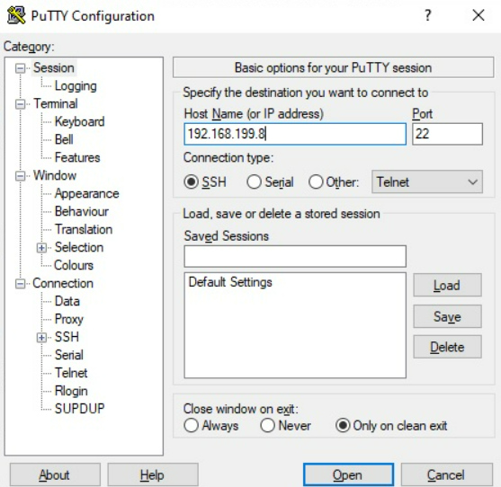
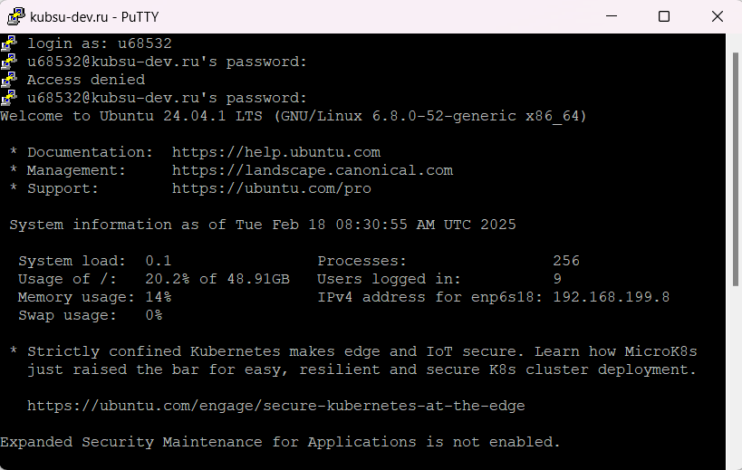
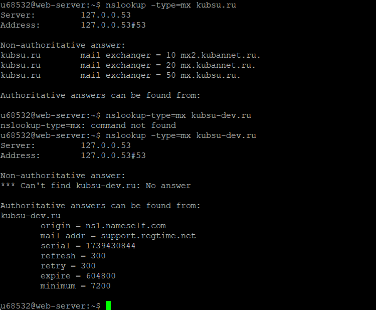
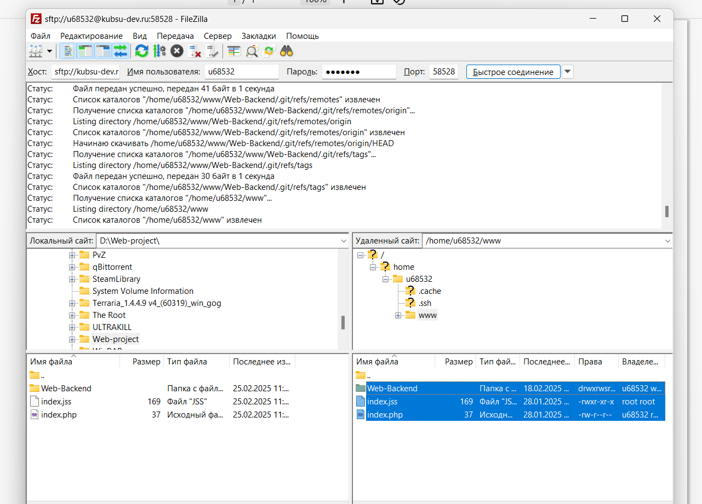

Подключение к серверу kubsu-dev.ru по SSH через PuTTY


С помощью утилиты ping на учебном сервере узнаем IP-адрес веб-сервера kubsu.ru.

С помощью утилиты nslookup узнаем ресурсные DNS A-записи доменов kubsu.ru и kubsu-dev.ru.
Запись A - адресная запись, соответствие между именем и IP-адресом.

С помощью утилиты nslookup c флагом -type=mx узнаем MX-записи доменов kubsu.ru и kubsu-dev.ru.

С помощью утилиты whois узнаем дату регистрации домена kubsu.ru и kubsu-dev.ru

Создание SSH ключа

Клонирование репозитория

С помощью программы FileZilla соединяемся с учебным сервером по протоколу SFTP.

Копируем на локальный компьютер файлы задания из каталога www.
